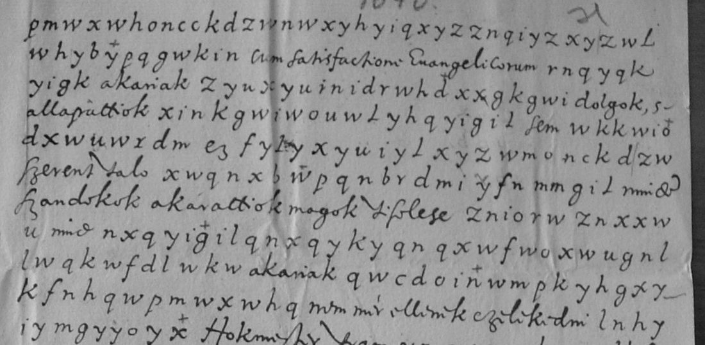
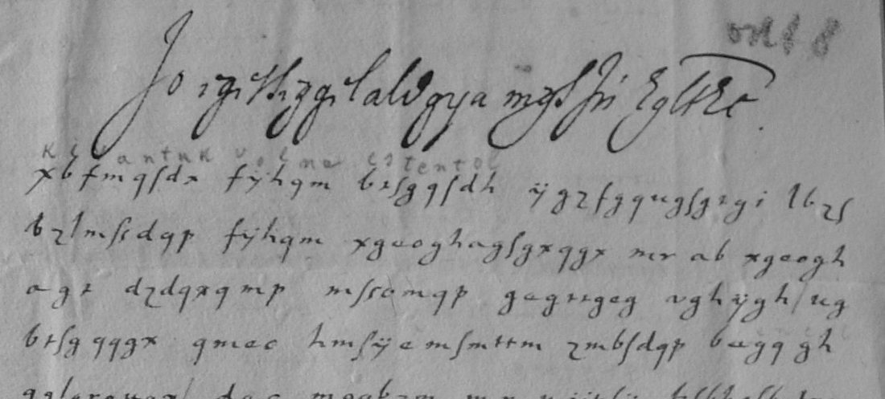

At a glanceKey recovered from the ciphertext alone, partial · 2,775 of 4,785 cipher letters
- The letters
- Six records of the Keresdi Bethlen papers, 1645–1648: numbered points for Bethlen's Warsaw mission (1645), a letter to the Hofmeister (1646), a clear letter with three cipher spans (1647), and three of 1648, two of them from Zsigmond Rákóczi and one from the Rákóczi brothers to Bethlen and Andrew Klobusiczky, envoys to the Polish diet.
- Where
- Romanian National Archives, Cluj (not Sibiu), Keresdi Bethlen 14–15; DECODE R4936–R4940 and R4942, all listed N/A with no decryption.
- The cipher
- Letter-for-letter substitution of Hungarian, written without word breaks, in reciprocal pairs (c = p, g = u, q = t ...). R4939 uses a second paired alphabet in another hand.
- How it was deciphered
- The family alphabet was found by annealing against a Hungarian quadgram model on R4936 (23 Sept 2026) and applied unchanged to the others; R4939 was broken the same way from its own 1,631 letters (23 Oct 2026). A blind second transcription of six R4939 lines agrees on 93.9% of letters.
- What it says
- Hiring musketeers and dragoons in Poland (1645), distrust of the Emperor's diploma for the Protestants (1646), and in 1648 the Polish crown: the brothers write that their father, György I Rákóczi, is dying and bind the envoys to push Zsigmond's candidacy.
- Still open
- R4936 (1,956 letters) decodes but 6.7% of its letters sit on g/q look-alikes the scan cannot separate; R4938's three spans are fragments; about twelve words of R4939 and two runs of R4937 are illegible. R4939 is to become a target of its own.

01 The records
DECODE holds ten cipher records from two Transylvanian collections in Cluj under R4933–R4942. They were first grouped by number and split by cipher on 14 Oct 2026: R4941 is a different substitution (r4941) and R4933–R4935 are the Kemény collection of 1628 (kemeny1628). This page covers the six from Keresdi Bethlen 14–15:
- R4936 (Keresdi Bethlen 14, 1645): numbered points in the prince's “we” for Bethlen's mission to Warsaw, both pages almost wholly in cipher. Decoded, not counted (see section 04).
- R4937 (15-01, 1646): one long page to “edes Hokmester”, sender not named. Deciphered.
- R4938 (15-02, 24 Apr 1647): a clear letter with three short cipher spans, 54 letters. Decoded in fragments.
- R4939 (15-03, 1648): two pages of cipher in another hand, addressed in clear to “Magnificis Francisco Betthlen de Keresd ... ac Andreae Klobusiczki ... ad moderna comitia Reipub. Poloniae legatis”. Deciphered in its own alphabet.
- R4940 (15-04, Munkács, 2 Aug 1648): Zsigmond Rákóczi to Bethlen, clear with two cipher spans of 23 letters. Deciphered.
- R4942 (15-06, 1648): Zsigmond Rákóczi, a cipher block of 252 letters; DECODE's image 3 is a clear slip of the same block in his name. Deciphered.
No decipherment of any of them was found in print: Lukinich's edition of Bethlen's correspondence (1907) and his biography (1908), Szilágyi's documents on the peace of Linz (1885) and Erdély és az északkeleti háború I were searched; the last prints the envoys' reports of October 1648, not these letters.
02 The family alphabet
The writers spell Hungarian letter by letter in a substitution whose letters are swapped in pairs, so that the same table enciphers and deciphers: c and p, g and u, q and t, among others (shared-key-hypothesis.json in the folder). A first statistical key on R4936 had c = u, g = t and q = p; the error was in the hand transcription, which had confused those letter shapes, and once the transcription was corrected the pairs fell into place. The opening of R4937 shows it: pmwxwh oncckdzwnw is czasar dipplomaia, “the Emperor's diploma”.
The alphabet was recovered on 23 Sept 2026 by simulated annealing against the shared Hungarian quadgram model, with no crib, on R4936. On 23 Oct 2026 R4936 was re-transcribed from the images (215 label changes) and R4937 and R4942 were transcribed in full; all three were decoded with the alphabet unchanged and aligned letter by letter with the figures. In R4937, 839 of 847 letters of the reading stand on the cipher letter's own value.
03 The letters that give sentences
R4937, 1646, to the Hofmeister
The letter opens in cipher and keeps clear words between the runs (in italics in the reading). From R4937_reading.md:
czasar dipplomaia serent semmit nem sem akar efectualni Cum satisfactione Evangelicorum; ... az clerus elbirta czasart ...
“According to the Emperor's diploma he wants to effect nothing at all cum satisfactione Evangelicorum ... The clergy has prevailed over the Emperor.” The writer urges Bethlen to keep the plan from the King of Poland and, if the Emperor's armies move, to hire four thousand good foot with their officers and dragoons, or at the least a thousand foot and five hundred dragoons. A run after megsegni in line 3 and the end of line 13 decode to letter strings that are not words.
R4940 and R4942, Zsigmond Rákóczi, 1648
R4940 is a clear letter from Munkács of 2 August 1648 with two cipher spans: votumiok and niert dolog volna, “if their votes were as Your Grace writes, it would be a won matter”. R4942's cipher block speaks of using the intermediaries and of the plenipotentiary power his brother has given him; its clear slip on image 3 carries the same text and confirms the decipherment.
04 R4939, a second cipher

R4939 is in a different simple substitution: 23 cipher letters, each standing for one plain letter, with ten reciprocal pairs (a–m, b–i, c–p, d–u, e–g, f–v, h–l, o–y, r–z, s–t). It was transcribed (1,631 letters) and broken from its own ciphertext by annealing on 23 Oct 2026; 50 look-alike labels were then corrected on 3× crops (R4939_key.md, R4939_corrections.tsv). An independent second reader transcribed six randomly drawn lines blind: 200 of 213 letters agree (93.9%), and three words of 36 are not carried by the blind decode. Under the project's one-key rule it should be a target of its own; it is described here until it is split.
The brothers write to Bethlen and Klobusiczky that their father is dying (az doctor itileti szerent is eletehez ... semmi ... ninc, “by the doctor's judgement there is no [hope] for his life”), that he did not want the Polish crown for himself, that seeking the principality for Zsigmond now would put the country in danger, and they bind the envoys to further oeczem uram promotioiat, “my younger brother's promotion”, with money to be spent on it. Lines 3–9 keep about twelve words that decode to non-words with every look-alike pair tried.
05 What remains open
- R4936 (1645, 1,956 letters). It decodes into numbered points on the Warsaw mission (three thousand musketeers and a thousand dragoons to be hired, money at Danzig, Bregy and Croissy), but 130 letters of the reading (6.7%) sit on the other member of a look-alike pair, mostly t written on g-shaped letters; at the scan's 1,704-pixel width the hand's g and q do not separate, and no contemporary or printed text settles the choice. Counted as decoded, not read; blocker: illegible (a sharper image of Keresdi Bethlen 14 would settle it).
- R4937: a run on line 3 and the end of line 13 (illegible at 2.2×).
- R4938: three spans of 54 letters decoded with the family key (az Rakoczi Sigmon, az nekunk [...] volna, mi [?nevunkre] forogion); one word, ailunkker, occurs once and is too short to settle. The clear letter around them is not transcribed.
- R4939: about twelve words in lines 3–9 (illegible on the scan).
- The family alphabet's statistical validation on R4940 alone is “too short” (23 letters); the checks that carry it are the R4942 clear slip, the alignments and the sense of the longer letters.
Measured on the transcriptions: R4937 869, R4942 252, R4940 23 and R4939 1,631 cipher letters are in letters that give sentences, 2,775 of 4,785 (0.58). The modern Hungarian word list cannot score 17th-century spelling (it gives 0.07 on printed letters of 1645), so the sentences were judged by reading; the explicit-hole share of the readings is 0.90–1.00.
06 Sources
- Romanian National Archives, Cluj, Keresdi Bethlen 14–15, via DECODE R4936, R4937, R4938, R4939, R4940, R4942 (28 images fetched 23 Sept 2026).
- Lukinich Imre, “Keresdi Bethlen Ferencz levelezése”, Magyar Történelmi Tár 1907; “Keresdi báró Bethlen Ferencz”, Századok 1908; Szilágyi Sándor, documents on the peace of Linz (1885); Erdély és az északkeleti háború I. None prints these letters.
Transcriptions, alignments, the two keys, the readings and their English translations are in targets/transylvania1645/.